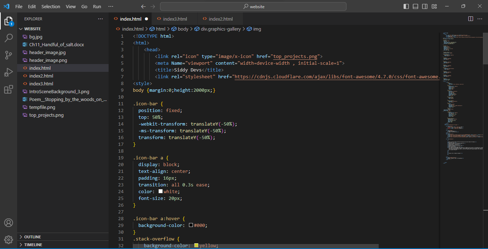
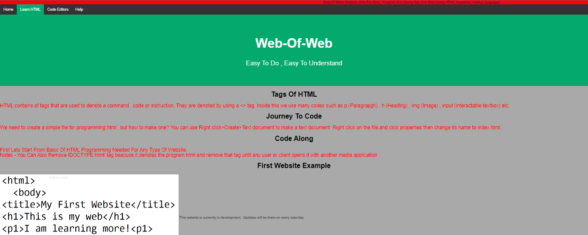
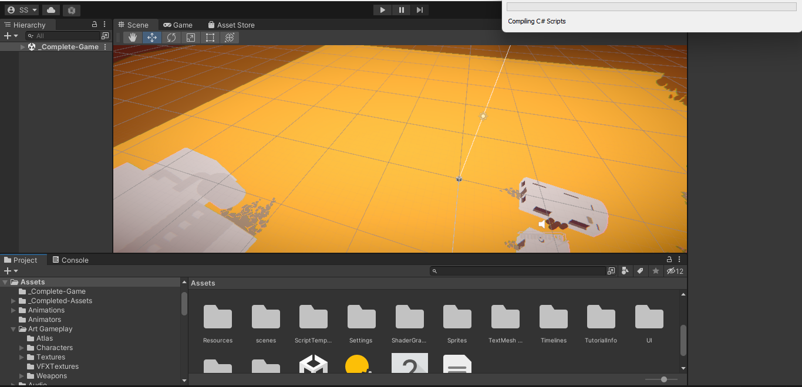

Want To See Me Create? Ask Me On The Social On The Left Side Of The Page!
My project list:-
Python Calculator with Artificial Input AI
Python Calculator with tkinter
GUI app with C , C# and C++
Minecraft Shaderpack Configurator {RT
Website with CSS
How I Develop Websites Like This?
This website uses CSS HTML5 and is powerful for people with no servers. This website will contain
many things like background , opacity , Social media icons and more. This social media icon bar is created
from the stylesheet published online. It was not created by me! Actually beacuse I am a website programmer
not a graphics designer!
1 / 3

Development Time of Web Of Web - WOW
2 / 3

Final Results Of Web Of Web - WOW
3 / 3

Development Of Drive Forever 1
❮❮
❯❯
My Gaming Skills
Actually I do not like playing games when comes the choice between programming
and gaming. I do it for just programming. You might think , How minecraft is for programming?
If you have ever heard of minecraft commands , You might know how good is minecraft!
its the most boring game ever but i use it for making models and export it for my games
using world miniporter (Directory multiplyer by me) and import it to unity engine